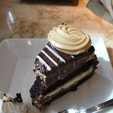

<!DOCTYPE html>
<html lang="en">
</html>
<meta charset="UTF-8">
<h1> Cheesecake</h1> 

<h3> Description </h3>
<p>
A quick guide onto how to make a cheesecake that will knock your socks off. 
This has been one of the best ways I have found to make a cheesecake. 
Quick and easy one of the best that I have found so far!

</p>
<p><h4>Ingredients</h4>

<li>10 gram crackers
</li>
<li>1/3 cup white sugar</li>
<li> 5 tablespoons butter, melted</li>
<li> 2 (8 ounce) packages cream cheese</li>
<li>1 cup white sugar</li> 
<li>4 eggs</li>
<li> 1 pint heavy whipping cream</li>

<li> 8 (1 ounce) squares semisweet chocolate, chopped</li>

    
</p>

<p>
<h4> Steps </h4>
<ol>
<li>
    Preheat oven to 350 degrees F (190 degrees C). Grind graham crackers in a food processor.
</li>
<li>
    In a small bowl, or in the food processor, stir together the graham cracker crumbs, white sugar and melted butter. Press into the bottom, and 1 inch up the sides of a 9 inch springform pan.
</li>
<li>
    Bake for 15 minutes in the preheated oven, set aside to cool.
</li>
<li>
    Melt semisweet chocolate over a double boiler along with the cream. Stir occasionally until melted, then set aside to cool.
</li>
<li>In a medium bowl, beat the cream cheese and sugar until soft. Stir in the eggs, one at a time, mixing well between additions. Stir in the chocolate mixture until fully incorporated. Pour into the prepared crust.
</li>
<li>
    Bake for 55 to 60 minutes in the preheated oven. Let cake cool to room temperature, then refrigerate for at least 8 hours before serving.
</li>
</ol>


</p>
    <a href= "https://www.allrecipes.com/recipe/17414/chocolate-cheesecake-iii/?evt19=1"> Cheesecake </a>
